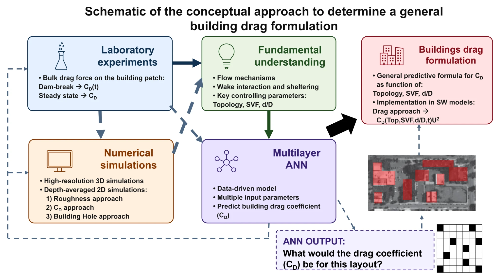
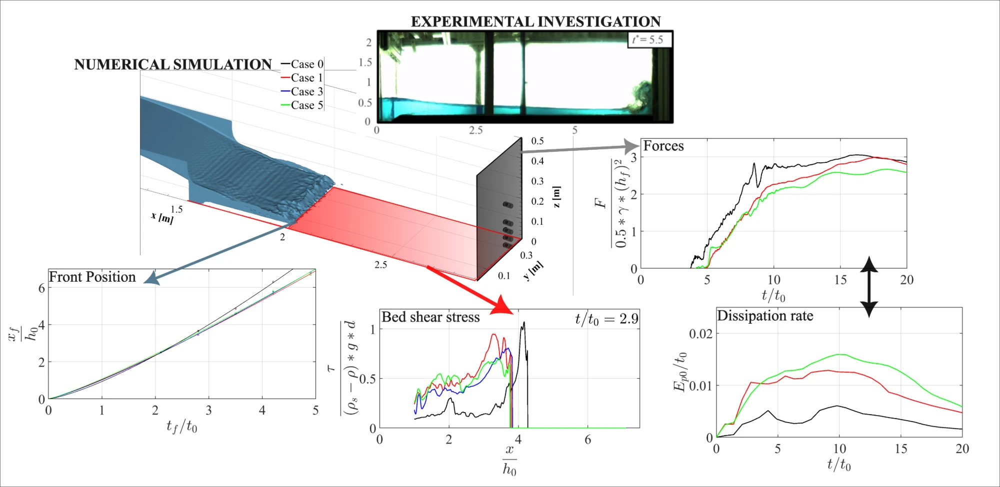
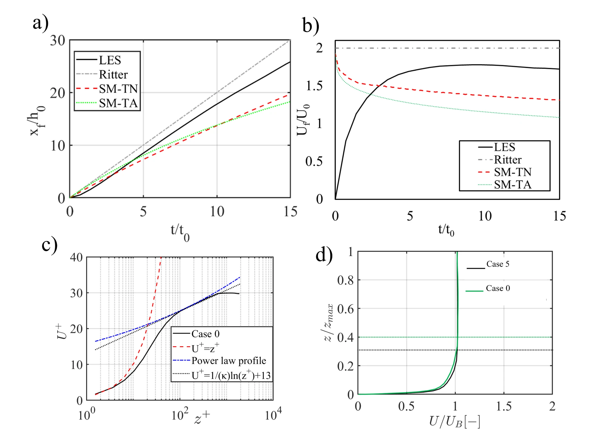
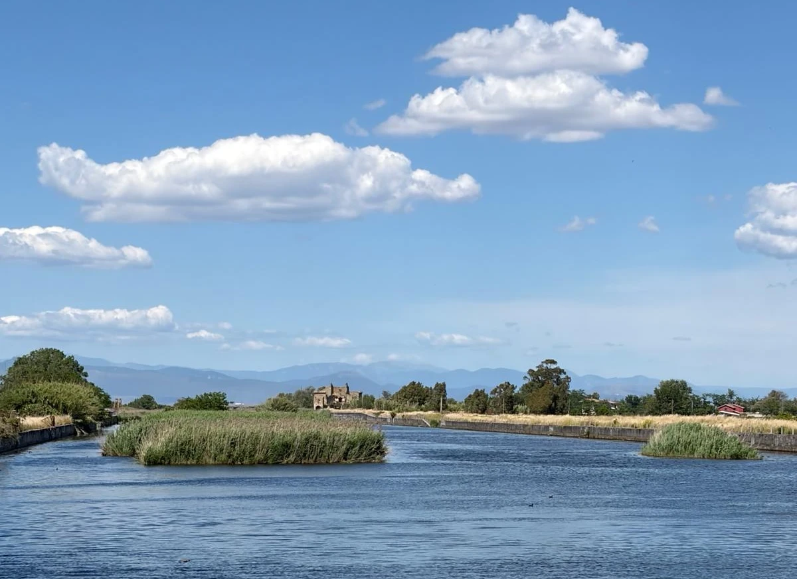
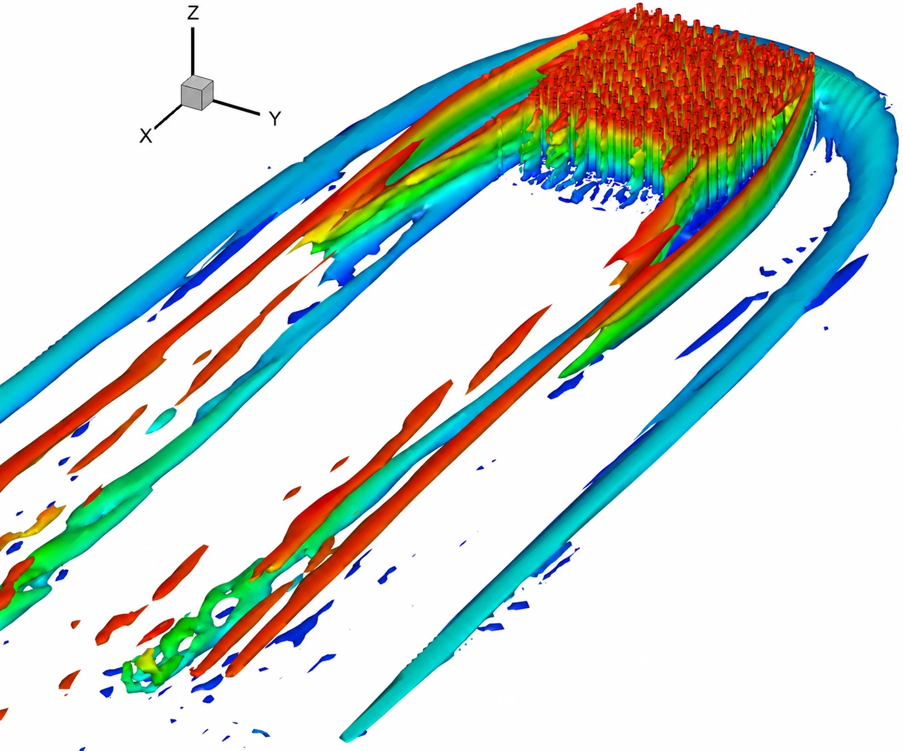
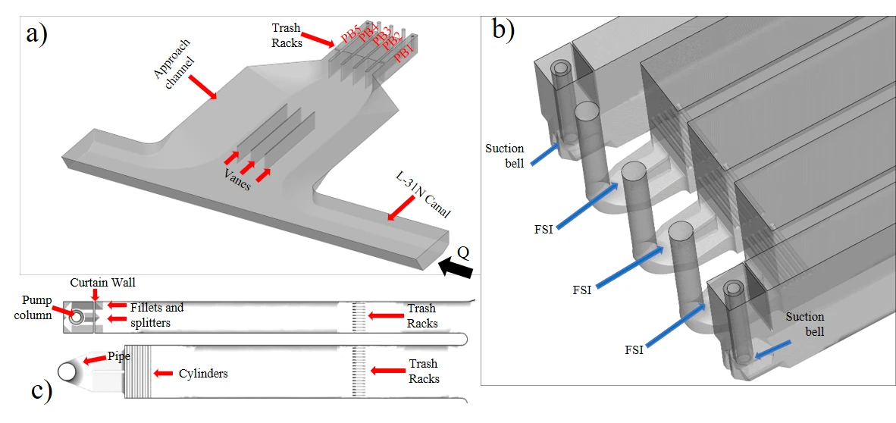
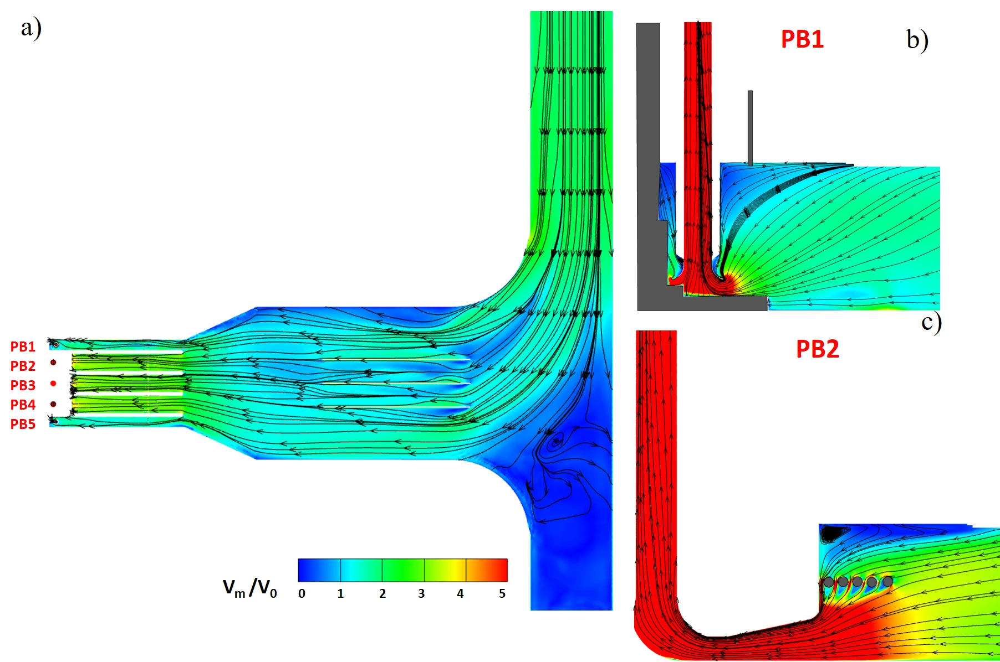
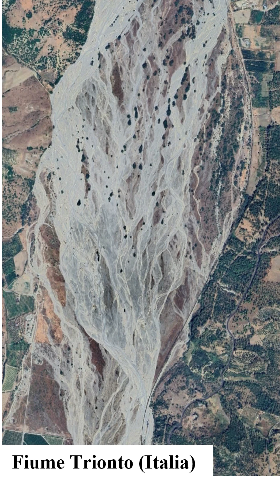
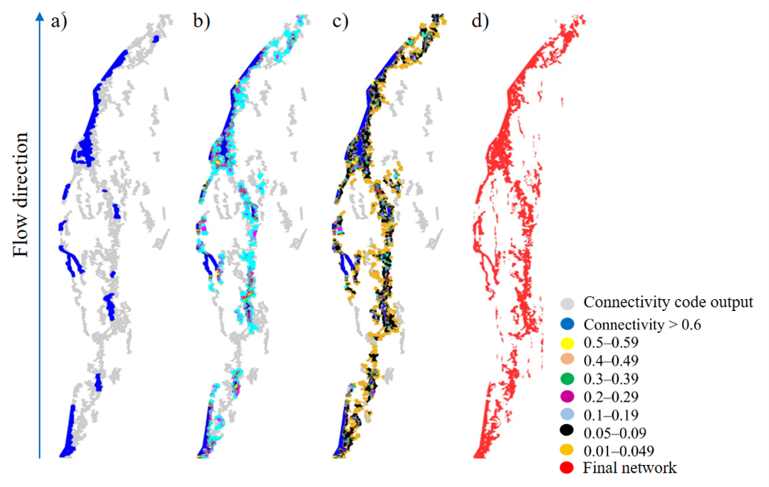

Research Program
My research combines state-of-the-art numerical simulations with laboratory and field experiments to investigate the physics of flows and transport processes related to applications in the general area of water resources and geophysical fluid dynamics with a particular emphasis on extreme weather events and floods waves; and to use this knowledge to improve the resilience of hydraulic infrastructures and to develop nature-based solutions (NbS) to safeguard man-made and natural environments.
Ongoing project · FSR-FNRS · UCLouvain

Supported by an FSR-FNRS Incoming Postdoctoral Fellowship at the Institute of Mechanics, Materials and Civil Engineering (iMMC), this project brings together my two main research lines: turbulent flow through vegetation and unsteady flood and dam-break waves.
Urban flood models based on the depth-averaged shallow-water equations can account for buildings in different ways. The most accurate is the building-hole approach, where every building is cut out of the computational mesh; however, meshing each building individually is very time-consuming and computationally demanding at the scale of a city. For this reason, buildings are often represented through an increased roughness, which is fast but not physically based. The drag approach offers a compromise: it is computationally efficient and more physically based, as buildings act on the flow through a drag force proportional to a drag coefficient CD.
For an isolated building, the value of CD to use in the model is well known. A more efficient, bulk approach, however, treats a whole block of neighbouring buildings as a single porous medium with its own drag coefficient, instead of assigning a CD to every building. How much drag such a porous zone of buildings exerts on the flow, and how it depends on the building layout, is still an open question. This project aims to provide the CD of porous zones composed of buildings.
The project combines laboratory experiments, measuring the bulk drag force on patches of buildings under steady flow (CD) and dam-break waves (CD(t)), with numerical simulations, from high-resolution 3D simulations to depth-averaged 2D models using the roughness, drag and building-hole approaches. Together they provide a fundamental understanding of the flow mechanisms, of wake interaction and sheltering between buildings, and of the key controlling parameters: the layout topology, the solid volume fraction (SVF) and the ratio d/D.
The experimental and numerical data are then used to train a multilayer artificial neural network (ANN) that predicts the bulk drag coefficient of any building layout. The final goal is a general predictive formula, CD(topology, SVF, d/D, t), that can be implemented directly in shallow-water models through the drag term CDU2, improving how flood hazard is predicted and mitigated in cities.
The research combined laboratory experiments and advanced numerical simulations to investigate dam-break wave dynamics over fixed and mobile beds and their impact on vertical structures. High-speed imaging and pressure measurements were used to characterize wave propagation and impact forces. Two- and three-dimensional Navier–Stokes models were employed and compared with simplified shallow-water approaches to assess accuracy and computational efficiency. The study was extended to non-Newtonian fluids using power-law rheology, revealing the critical role of turbulence in governing mudflow-like wave dynamics, bed shear stresses, and impact forces


My research bridges high-resolution Large-Eddy Simulations (LES) and field measurements to investigate turbulence, secondary currents, and transport processes in vegetated open-channel flows. Numerical studies focus on flow structures, wake dynamics, drag forces, and sediment erosion/deposition around emergent and submerged vegetation patches, examining the influence of vegetation density, submergence, and flow conditions. Complementary field investigations using Acoustic Doppler Velocimetry (ADV) characterize three-dimensional flow structures, turbulence anisotropy, and spectral dynamics under different natural vegetation configurations, providing insights into mixing and momentum exchange in vegetated rivers.


My research, supported by the South Florida Water Management District, focused on the formation and suppression of free-surface and subsurface vortices in multi-bay pump stations. I developed high-resolution Detached-Eddy Simulations (DES) with a deformable free surface to investigate vortex dynamics, air entrainment, and pump-column swirl under different operating conditions and flow-control configurations. Numerical predictions were validated against laboratory experiments, demonstrating the potential of eddy-resolving simulations for optimizing pump station design. The research also addresses turbulence-model performance and scale effects between laboratory models and full-scale pump stations, highlighting the advantages of numerical approaches for assessing complex hydraulic phenomena.


During my postdoctoral research at the University of Naples, I contributed to the development of a connectivity-based algorithm for extracting active channel networks and quantifying morphodynamic changes from geospatial data. The framework integrates drone-based photogrammetry and satellite DInSAR measurements to identify sediment transport indicators and estimate morphologically active channel widths. Its flexible structure enables application across different river environments and spatial scales.

